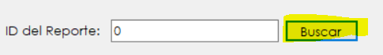
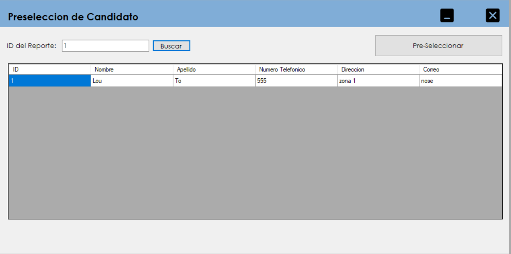
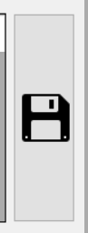

El primer paso sera buscar el reporte sobre vacante para conocer a los candidatos que optan por el puesto solicitado. Colocamos el numero de reporte y posteriormente dar click al boton de "Buscar".
Luego de presionar ese botón apareceran los candidatos que estan optando por el puesto.

Luego de encontrados los candidatos que estan optando por el puesto daremos click al boton de "Preseleccionar".
Luego de esto pasaremos al siguiente formulario que sera explicado mas adelante.
En este formulario se nos mostraran dos vistas, una llamada "Aptos para el Puesto" que es donde estan los candidatos que cumplen todos los requerimientos solicitados. Y en la otra vista llamada "No aptos para el puesto" se muestran los que no cumplen.
Si damos click sobre algun candidato pasara al otro listado de donde se encuentre, esto servira para trasladar aquellos candidatos que no consideremos aptos a pesar de haber cumplido los requisitos o los que no cumplieron pero se les puede dar una oportunidad.
Luego de revisar detenidamente los candidatos, daremos click al boton de guardar para pasar los candidatos al siguiente proceso para poder ser contratados.